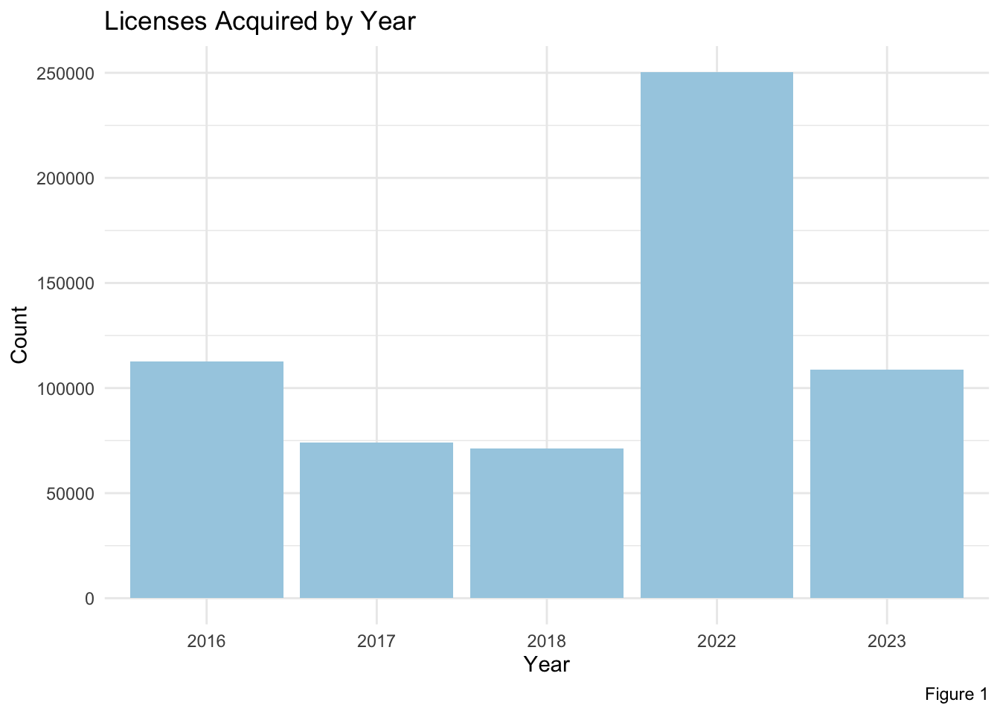
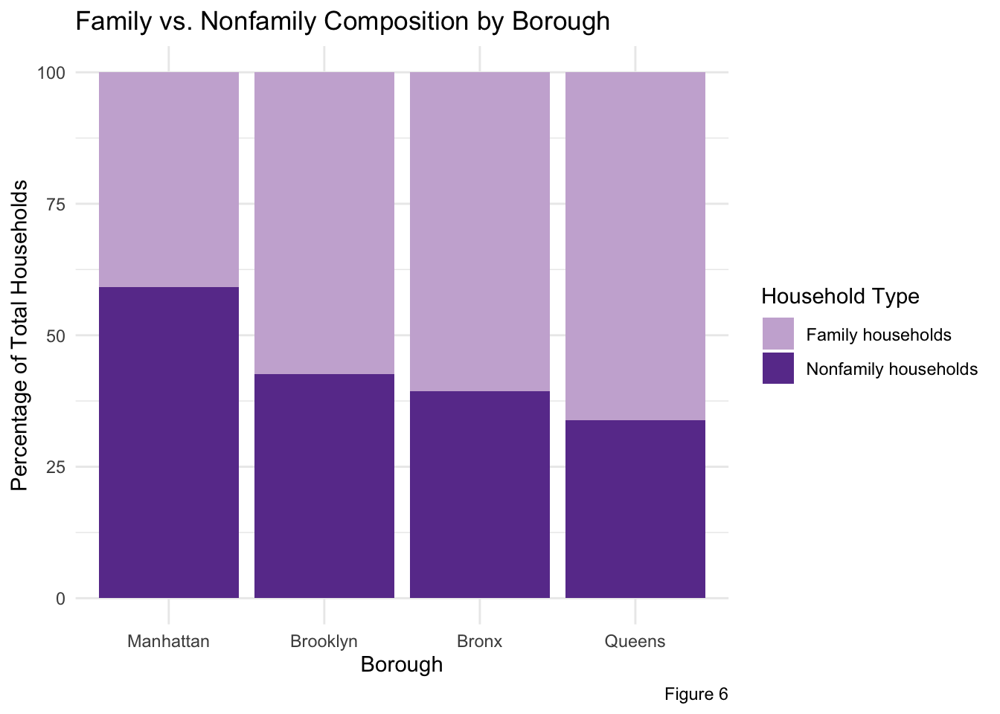
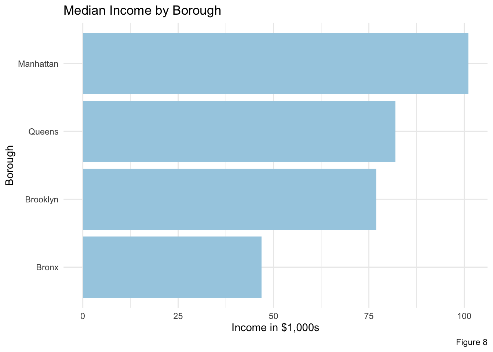
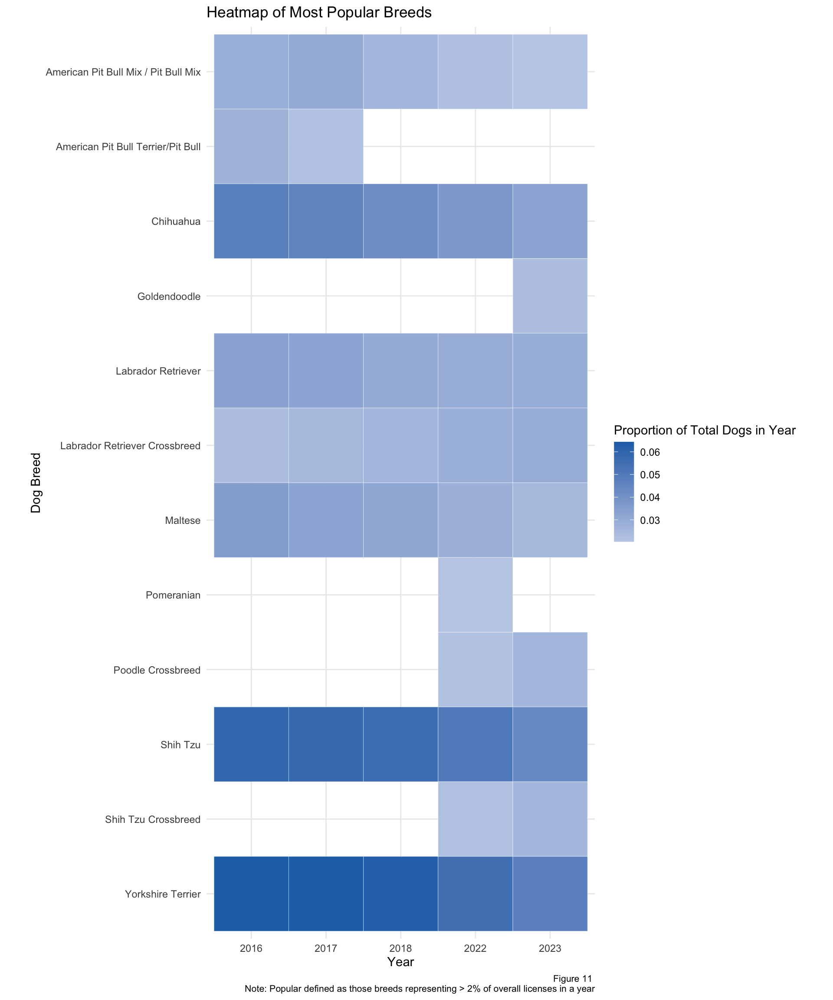

3 Results

To begin our analysis, we explored dog ownership trends over time to draw conclusions on the growth of New York City’s dog population in relation to cultural shifts and world events.
In this portion of our analysis, we explored New York City’s dog population spatially to draw conclusions about the impact of geography on population characteristics.
Code
dog_license_count_by_zip <- dog_license_data |>
group_by(ZipCode) |>
summarize(count = n()) |>
arrange(desc(count)) |>
mutate(ZipCode = as.character(ZipCode))
zip_sf_with_dog_count <- zip_code_sf |>
left_join(dog_license_count_by_zip, by="ZipCode")
zip_sf_with_dog_ratio <- zip_sf_with_dog_count |>
mutate(dog_to_human_ratio = count / pop_est)
ggplot() +
geom_sf(data = zip_sf_with_dog_ratio, aes(fill=dog_to_human_ratio)) +
scale_fill_distiller(name = "Dog-To-Human Population Ratio", palette = "Blues", direction = 1) +
theme_void() +
theme(panel.grid = element_line(color="transparent")) +
labs(title = "What NYC neighborhoods have high dog ownership?", caption = "Figure 1")
From Figure 1, we observe that the zip codes with high ratios of licensed dog ownership tend to be in or in close proximity to Manhattan. The highest density zip code appears on the Upper West Side of Manhattan, a largely residential neighborhood. Density remains high in midtown and lower Manhattan, but is lower in Upper Manhattan. This trend is similar in Brooklyn. Neighborhoods closest to lower and midtown Manhattan have a high count of licensed dogs while neighborhoods deeper into Brooklyn and in Queens tend to have lower counts. Neighborhoods in Staten Island showed a high ratio of dog ownership as well. This graph, and in particular our observation on the Upper West Side, provoked us to ask another question. In the next figure, we explore the impact of green spaces on licensed dog population.
Code
manhattan_boundary <- borough_boundaries_sf |>
filter(boro_name == "Manhattan")
zip_sf_manhattan <- st_intersection(zip_sf_with_dog_ratio, manhattan_boundary)
open_spaces_sf_manhattan <- st_intersection(st_make_valid(open_spaces_sf), manhattan_boundary)
manhattan_plot <- ggplot() +
geom_sf(data = zip_sf_manhattan, aes(fill=dog_to_human_ratio)) +
geom_sf(fill = "#99ff66", data = open_spaces_sf_manhattan) +
scale_fill_distiller(name = "Dog-To-Human-Ratio", palette = "Greys", direction = 1) +
theme_void() +
theme(panel.grid = element_line(color="transparent")) +
labs(title = "Manhattan")
brooklyn_boundary <- borough_boundaries_sf |>
filter(boro_name == "Brooklyn")
zip_sf_brooklyn <- st_intersection(zip_sf_with_dog_ratio, brooklyn_boundary)
open_spaces_sf_brooklyn <- st_intersection(st_make_valid(open_spaces_sf), brooklyn_boundary)
brooklyn_plot <- ggplot() +
geom_sf(data = zip_sf_brooklyn, aes(fill=dog_to_human_ratio)) +
geom_sf(fill = "#99ff66", data = open_spaces_sf_brooklyn) +
scale_fill_distiller(name = "Dog-To-Human Ratio", palette = "Greys", direction = 1) +
theme_void() +
theme(panel.grid = element_line(color="transparent")) +
labs(title = "Brooklyn")
(manhattan_plot | brooklyn_plot) +
plot_annotation(title = "Does proximity to green space affect dog ownership?", caption = "Figure 2")
In Manhattan, zip codes surrounding Central Park displayed the high ratios of dog ownership. Particularly the Upper West Side which is surrounded both by Central Park to the East and Riverside Park to the West. There were some zip codes of Manhattan which did not fit the pattern. At the North tip of Manhattan is two large parks - Inwood Hill Park and Fort Tyron Park. However the zip codes surrounding these had relatively low numbers of licensed dogs. In Brooklyn, the trend is equally apparent. Zip codes surrounding Prospect Park, the second largest park in Brooklyn, had the highest licensed dog populations. Zip codes surrounding the largest park, Marine Park, had slightly higher counts relative to surrounding neighborhoods in outer Brooklyn. There are also high count neighborhoods surrounding Dyker Beach Park in South Brooklyn and Fort Greene Park in North Brooklyn. Figure 2 led us to conclude that proximity to green space is correlated to dog population. This is a logical conclusion as being close to a green space allows ease of walking and socializing your pet. As we showed in the above two figures, geography has an impact on rates of dog ownership. We further wondered, does geography affect the most popular dog breeds?
Code
dog_license_breed_count_by_borough <- dog_license_data |>
mutate(BreedName = recode(BreedName, "American Pit Bull Mix / Pit Bull Mix" = "Pit Bull Mix", "American Pit Bull Terrier/Pit Bull" = "Pit Bull Terrier")) |>
left_join(zip_code_to_borough, by="ZipCode") |>
filter(!is.na(Borough)) |>
filter(BreedName != "Unknown") |>
group_by(Borough, BreedName) |>
summarize(count = n()) |>
arrange(desc(count)) |>
slice_head(n=5)
ggplot(dog_license_breed_count_by_borough, aes(x = count, y = reorder(BreedName,count))) +
geom_col(fill = "skyblue", color = "black") +
facet_wrap(~Borough, scales="free_y") +
labs(title = "What are the Most Popular Dog Breeds By Borough?") +
labs(x = "Count of Licensed Dogs", y= "Dog Breed", caption = "Figure 3") +
scale_y_discrete(labels = function(x) str_wrap(x, width = 15)) +
theme_minimal()
From Figure 3 above, we observed that the popularity of dog breeds across boroughs is more alike than it is different. Every borough had Yorkshire Terrier as the most popular licensed dog breed, followed by Shih Tzu. Chihuahaus appeared in the top five for all boroughs. Both these breeds are small in size, and thus, are practical dogs to raise in densely populated areas. The Bronx was the only borough to not include Labrador Retrievers in the top five, instead showing high popularity of American Pit Bull Terrier mixes.
Code
# most popular dog breeds
counts_breed <- dogs |>
group_by(Year, BreedName) |>
summarise(count = n()) |>
mutate(proportion = count/ sum(count))
counts_breed <- counts_breed %>%
arrange(Year, proportion)
# Sort the data by borough and year (optional)
counts_breed <- counts_breed %>%
# arrange(Year) |>
mutate(BreedName = ifelse(proportion < 0.02, "Other", BreedName)) %>% # Reassign low counts to "Other"
group_by(Year, BreedName) %>% # Group by the new breed categories
summarize(proportion = sum(proportion, na.rm = TRUE), .groups = "drop") # Sum counts within each group
counts_breed_filtered <- counts_breed %>% filter(BreedName != "Other")
#ggplot(counts_breed_filtered, aes(x = factor(Year), y = fct_rev(reorder(BreedName, BreedName)), fill = proportion)) +
# geom_tile() +
# scale_fill_gradient(low = "cornflowerblue", high = "blue") +
# labs(title = "Heatmap of Top 10 Dog Breeds by Count",
# x = "Year",
# y = "Dog Breed",
# fill = "Proportion") +
# theme_minimal()
popular_breeds <- ggplot(counts_breed_filtered, aes(x = factor(Year), y = fct_rev(reorder(BreedName, BreedName)))) +
geom_tile(aes(fill = proportion), color = "white") +
coord_fixed() +
scale_fill_gradient2(low = "lightblue",
high = "darkblue") +
labs(title = "Heatmap of Most Popular Breeds",
x = "Year",
y = "Dog Breed",
fill = "Proportion of Total Dogs in Year") +
theme_minimal()
popular_breeds 
Code
# popular dog names overall
dogs$AnimalName[dogs$AnimalName == "UNKNOWN"] <- NA
dogs$AnimalName[dogs$AnimalName == "NOT PROVIDED"] <- NA
dogs$AnimalName[dogs$AnimalName == "NAME NOT PROVIDED"] <- NA
dogs$AnimalName[dogs$AnimalName == "NA"] <- NA
counts_name <- dogs |>
group_by(AnimalGender, AnimalName) |>
summarise(count = n()) |>
arrange(desc(count)) |>
slice_head(n=10)
filtered_data_names_F <- counts_name |> filter(!is.na(AnimalName)) |> filter(!is.na(AnimalGender)) |> filter(AnimalGender == "F")
filtered_data_names_M <- counts_name |> filter(!is.na(AnimalName)) |> filter(!is.na(AnimalGender)) |> filter(AnimalGender == "M")
names_F <- ggplot(filtered_data_names_F, aes(x = reorder(AnimalName, count), y = count)) +
geom_bar(stat = "identity", fill = "skyblue", color = "black") + # Bar chart
labs(title = "Top 10 Most Popular Female Names, All Years", x = "Year", y = "Count") + # Labels
theme_minimal() +
theme(axis.text.x = element_text(angle = 45, hjust = 1)) # Tilt labels by 45 degrees
names_FCode
names_M <- ggplot(filtered_data_names_M, aes(x = reorder(AnimalName, count), y = count)) +
geom_bar(stat = "identity", fill = "skyblue", color = "black") + # Bar chart
labs(title = "Top 10 Most Popular Male Names, All Years", x = "Year", y = "Count") + # Labels
theme_minimal()+
theme(axis.text.x = element_text(angle = 45, hjust = 1)) # Tilt labels by 45 degrees
names_M
Code
combined_plot <- names_F + names_M + plot_layout(ncol = 2)
combined_plot
Code
# dog bite
dog_bite <- read_csv("data/DOHMH_Dog_Bite_Data_20241119.csv")
dog_bite$year <- substr(dog_bite$DateOfBite, nchar(dog_bite$DateOfBite) - 3, nchar(dog_bite$DateOfBite))
dog_bite <- dog_bite |> filter(year >= "2016" & year <= "2022")
# DOG BITES - group together most popular dog breeds
dog_bite$breedgroup <- NA
dog_bite$breedgroup[grepl("pit bull terrier", dog_bite$Breed, ignore.case = TRUE)] <- "American Pit Bull Terrier/Pit Bull"
dog_bite$breedgroup[grepl("pit bull mix", dog_bite$Breed, ignore.case = TRUE)] <- "American Pit Bull Mix / Pit Bull Mix"
dog_bite$breedgroup[grepl("chihuahua", dog_bite$Breed, ignore.case = TRUE)] <- "Chihuahua"
dog_bite$breedgroup[grepl("labrador retriever", dog_bite$Breed, ignore.case = TRUE)] <- "Labrador Retriever"
dog_bite$breedgroup[grepl("labrador retriever crossbreed", dog_bite$Breed, ignore.case = TRUE)] <- "Labrador Retriever Crossbreed"
dog_bite$breedgroup[grepl("labrador retriever mix", dog_bite$Breed, ignore.case = TRUE)] <- "Labrador Retriever Crossbreed"
dog_bite$breedgroup[grepl("maltese", dog_bite$Breed, ignore.case = TRUE)] <- "Maltese"
dog_bite$breedgroup[grepl("goldendoodle", dog_bite$Breed, ignore.case = TRUE)] <- "Goldendoodle"
dog_bite$breedgroup[grepl("golden doodle", dog_bite$Breed, ignore.case = TRUE)] <- "Goldendoodle"
dog_bite$breedgroup[grepl("pomeranian", dog_bite$Breed, ignore.case = TRUE)] <- "Pomeranian"
dog_bite$breedgroup[grepl("poodle crossbreed", dog_bite$Breed, ignore.case = TRUE)] <- "Poodle Crossbreed"
dog_bite$breedgroup[grepl("poodle mix", dog_bite$Breed, ignore.case = TRUE)] <- "Poodle Crossbreed"
dog_bite$breedgroup[grepl("shih tzu", dog_bite$Breed, ignore.case = TRUE)] <- "Shih Tzu"
dog_bite$breedgroup[grepl("shih tzu crossbreed", dog_bite$Breed, ignore.case = TRUE)] <- "Shih Tzu Crossbreed"
dog_bite$breedgroup[grepl("shih tzu mix", dog_bite$Breed, ignore.case = TRUE)] <- "Shih Tzu Crossbreed"
dog_bite$breedgroup[grepl("yorkshire terrier", dog_bite$Breed, ignore.case = TRUE)] <- "Yorkshire Terrier"
filtered_bites <- dog_bite |> filter(!is.na(breedgroup))
counts_bite_group <- filtered_bites |>
group_by(year, breedgroup) |>
summarise(count_bites = n())
counts_bite_group <- rename(counts_bite_group, breed = breedgroup)
# most popular dog breeds
counts_popular <- dogs |>
group_by(Year, BreedName) |>
summarise(count_dogs = n(), .groups = "drop")
counts_popular <- rename(counts_popular, breed = BreedName)
counts_popular <- rename(counts_popular, year = Year)
# only keep certain breeds
filtered_df <- counts_popular |>
filter(breed %in% c("American Pit Bull Terrier/Pit Bull", "American Pit Bull Mix / Pit Bull Mix",
"Chihuahua", "Labrador Retriever",
"Labrador Retriever Crossbreed", "Maltese",
"Goldendoodle", "Pomeranian", "Poodle Crossbreed",
"Shih Tzu Crossbreed", "Yorkshire Terrier",
"Shih Tzu"))
merged <- merge(counts_bite_group, filtered_df, by = c("year", "breed"))
merged <- merged |>
mutate(bite_pop_ratio = log(count_bites / count_dogs))
library(RColorBrewer)
ggplot(merged, aes(x = year, y = bite_pop_ratio, color = breed, group = breed)) +
geom_point(size=3, alpha=0.8, shape=17, stroke=1) +
scale_colour_manual(values = rev(brewer.pal(12, "Paired")))+
labs(title = "Time Series of Bites by Breed",
x = "Year", y = "Log of Bite-to-Population Ratio") +
theme_minimal()
Code
dogs <- read_csv("data/NYC_Dog_Licensing_Dataset_20241119.csv")Warning: One or more parsing issues, call `problems()` on your data frame for details,
e.g.:
dat <- vroom(...)
problems(dat)Rows: 616890 Columns: 8
── Column specification ────────────────────────────────────────────────────────
Delimiter: ","
chr (5): AnimalName, AnimalGender, BreedName, LicenseIssuedDate, LicenseExpi...
dbl (3): AnimalBirthYear, ZipCode, Extract Year
ℹ Use `spec()` to retrieve the full column specification for this data.
ℹ Specify the column types or set `show_col_types = FALSE` to quiet this message.Code
zipcodes <- read_csv("data/New_York_State_ZIP_Codes-County_FIPS_Cross-Reference.csv")Rows: 324 Columns: 6
── Column specification ────────────────────────────────────────────────────────
Delimiter: ","
chr (3): County Name, County Code, File Date
dbl (3): State FIPS, County FIPS, ZIP Code
ℹ Use `spec()` to retrieve the full column specification for this data.
ℹ Specify the column types or set `show_col_types = FALSE` to quiet this message.Code
census2023 <- read_csv("data/US_census_2023NYC.csv")Rows: 345 Columns: 11
── Column specification ────────────────────────────────────────────────────────
Delimiter: ","
chr (11): Label (Grouping), New York!!Total population!!Estimate, New York!!...
ℹ Use `spec()` to retrieve the full column specification for this data.
ℹ Specify the column types or set `show_col_types = FALSE` to quiet this message.Code
census2023 <- census2023[ c(1,2,4,6,8,10) ]
census2023 <- census2023[-c(1:6,40:46,64:232,266:345),]
census_ages <- census2023[c(2, 5:13),]
census_households <- census2023[c(35:50),]
census_income <- census2023[c(52:72),]
total_pop_bronx <- as.numeric(gsub(",","", census_ages$`Bronx County, New York!!Total population!!Estimate`[1]))
census_ages$`Bronx` <- as.numeric(gsub("%", "", census_ages$`Bronx County, New York!!Total population!!Estimate` )) / 100 * total_pop_bronxWarning: NAs introduced by coercionCode
total_pop_kings <- as.numeric(gsub(",","", census_ages$`Kings County, New York!!Total population!!Estimate`[1]))
census_ages$`Kings` <- as.numeric(gsub("%", "", census_ages$`Kings County, New York!!Total population!!Estimate`)) / 100 * total_pop_kingsWarning: NAs introduced by coercionCode
total_pop_ny <- as.numeric(gsub(",","", census_ages$`New York County, New York!!Total population!!Estimate`[1]))
census_ages$`New York` <- as.numeric(gsub("%", "", census_ages$`New York County, New York!!Total population!!Estimate` )) / 100 * total_pop_nyWarning: NAs introduced by coercionCode
total_pop_queens <- as.numeric(gsub(",","", census_ages$`Queens County, New York!!Total population!!Estimate`[1]))
census_ages$`Queens` <- as.numeric(gsub("%", "", census_ages$`Queens County, New York!!Total population!!Estimate` )) / 100 * total_pop_queensWarning: NAs introduced by coercionCode
ages_long <- select(census_ages, c(1,7:10))[c(2:10),]
ages_long <- ages_long |>
rename(ages = `Label (Grouping)`)
ages_long <- ages_long |>
pivot_longer(cols = `Bronx`:`Queens`,
names_to = "Borough",
values_to = "Population")
ggplot(ages_long, aes(x = Population,
y = fct_reorder(ages, Population))) +
geom_point() +
facet_grid(fct_infreq(Borough) ~ ., scales = "free_y") +
theme(text = element_text(size = 8)) +
labs(title = "Population Distribution by Age Group and Borough",
x = "Population",
y = "Age Group") +
theme(legend.position = "top") 
Code
households_long <- select(census_households, c(1, 3:6))[c(2:3, 8, 10, 11, 13, 14),]
households_long <- households_long |>
rename(household_type = `Label (Grouping)`)
households_long$`Bronx County, New York!!Total population!!Estimate` <- as.numeric(gsub("%", "", households_long$`Bronx County, New York!!Total population!!Estimate`))
households_long <- households_long |> rename(Bronx = `Bronx County, New York!!Total population!!Estimate`)
households_long$`New York County, New York!!Total population!!Estimate` <- as.numeric(gsub("%", "", households_long$`New York County, New York!!Total population!!Estimate`))
households_long <- households_long |> rename(Manhattan = `New York County, New York!!Total population!!Estimate`)
households_long$`Kings County, New York!!Total population!!Estimate` <- as.numeric(gsub("%", "", households_long$`Kings County, New York!!Total population!!Estimate`))
households_long <- households_long |> rename(Brooklyn = `Kings County, New York!!Total population!!Estimate`)
households_long$`Queens County, New York!!Total population!!Estimate` <- as.numeric(gsub("%", "", households_long$`Queens County, New York!!Total population!!Estimate`))
households_long <- households_long |> rename(Queens = `Queens County, New York!!Total population!!Estimate`)
households_long <- households_long |>
pivot_longer(cols = `Bronx`:`Queens`,
names_to = "Borough",
values_to = "Percentage")
familyhouseholds <- households_long[c(1:4,9:12),]
household_plot1 <- ggplot(familyhouseholds, aes(x = Borough, y = Percentage, fill = household_type)) +
geom_bar(stat = "identity") + # Use actual values (percentage) for the bar heights
labs(
title = "Household Composition by Borough",
x = "Borough",
y = "Percentage of Total Households"
) +
theme_minimal()
data <- data.frame(
row_id = c("row1", "row2"),
value = c(40, 30)
)
withoutchildren_bronx <- households_long$Percentage[1] - households_long$Percentage[5]
withoutchildren_manhattan <- households_long$Percentage[3] - households_long$Percentage[7]
withoutchildren_brooklyn <- households_long$Percentage[2] - households_long$Percentage[6]
withoutchildren_queens <- households_long$Percentage[4] - households_long$Percentage[8]
# Create a new row with the calculated difference
withoutchildren_bronx <- data.frame(household_type = "withoutchildren", Borough = "Bronx", Percentage = withoutchildren_bronx)
withoutchildren_manhattan <- data.frame(household_type = "withoutchildren", Borough = "Manhattan", Percentage = withoutchildren_manhattan)
withoutchildren_brooklyn <- data.frame(household_type = "withoutchildren", Borough = "Brooklyn", Percentage = withoutchildren_brooklyn)
withoutchildren_queens <- data.frame(household_type = "withoutchildren", Borough = "Queens", Percentage = withoutchildren_queens)
# Add the new row to the original data
households_long <- rbind(households_long, withoutchildren_bronx)
households_long <- rbind(households_long, withoutchildren_brooklyn)
households_long <- rbind(households_long, withoutchildren_manhattan)
households_long <- rbind(households_long, withoutchildren_queens)
specificfamily <- households_long[c(5:8,13:32),]
specificfamily <- specificfamily|>
group_by(Borough, household_type) |>
summarize(Percentage = sum(Percentage), .groups = "drop")
household_plot2 <- ggplot(specificfamily, aes(x = Borough, y = Percentage, fill = household_type)) +
geom_bar(stat = "identity") +
labs(
title = "Household Composition by Borough",
x = "Borough",
y = "Percentage of Total Households"
) +
theme_minimal()
household_plot1
Code
household_plot2
Code
income_long <- select(census_income, c(1, 3:6))[c(2:3, 5,7,9,11,13),]
income_long <- income_long |>
rename(income_type = `Label (Grouping)`)
income_long$`Bronx County, New York!!Total population!!Estimate` <- as.numeric(gsub("%", "", income_long$`Bronx County, New York!!Total population!!Estimate`))Warning: NAs introduced by coercionCode
income_long <- income_long |> rename(Bronx = `Bronx County, New York!!Total population!!Estimate`)
income_long$`New York County, New York!!Total population!!Estimate` <- as.numeric(gsub("%", "", income_long$`New York County, New York!!Total population!!Estimate`))Warning: NAs introduced by coercionCode
income_long <- income_long |> rename(Manhattan = `New York County, New York!!Total population!!Estimate`)
income_long$`Kings County, New York!!Total population!!Estimate` <- as.numeric(gsub("%", "", income_long$`Kings County, New York!!Total population!!Estimate`))Warning: NAs introduced by coercionCode
income_long <- income_long |> rename(Brooklyn = `Kings County, New York!!Total population!!Estimate`)
income_long$`Queens County, New York!!Total population!!Estimate` <- as.numeric(gsub("%", "", income_long$`Queens County, New York!!Total population!!Estimate`))Warning: NAs introduced by coercionCode
income_long <- income_long |> rename(Queens = `Queens County, New York!!Total population!!Estimate`)
income_long <- income_long |>
pivot_longer(cols = `Bronx`:`Queens`,
names_to = "Borough",
values_to = "Percentage")
income_percentage <- income_long[c(5:28),]
income_plot <- ggplot(income_percentage, aes(x = Borough, y = Percentage, fill = income_type)) +
geom_bar(stat = "identity", position = "dodge") + # Use actual values (percentage) for the bar heights
labs(
title = "Income Composition by Borough",
x = "Borough",
y = "Percentage of Total Income"
) +
theme_minimal()
ggplot(ages_long, aes(x = Population,
y = fct_reorder(ages, Population))) +
geom_point() +
facet_grid(fct_infreq(Borough) ~ ., scales = "free_y") +
theme(text = element_text(size = 8)) +
labs(title = "Population Distribution by Age Group and Borough",
x = "Population",
y = "Age Group") +
theme(legend.position = "top") 
Code
income_dollars <- census_income[c(2),]
income_dollars <- income_dollars|> rename(Queens = `Queens County, New York!!Total population!!Estimate`)
income_dollars <- income_dollars|> rename(Brooklyn = `Kings County, New York!!Total population!!Estimate`)
income_dollars <- income_dollars|> rename(Manhattan = `New York County, New York!!Total population!!Estimate`)
income_dollars <- income_dollars|> rename(Bronx = `Bronx County, New York!!Total population!!Estimate`)
income_dollars <- income_dollars |>
pivot_longer(cols = Bronx:Queens,
names_to = "Borough",
values_to = "Income")
income_dollars$Income <- as.numeric(gsub(",","", income_dollars$Income))/1000
ggplot(income_dollars, aes(x = Income,
y = reorder(Borough, Income))) +
geom_point() +
labs(title = "Median Income by Borough",
x = "Income in $1,000s",
y = "Borough") +
theme(legend.position = "top") 
Code
income_plot